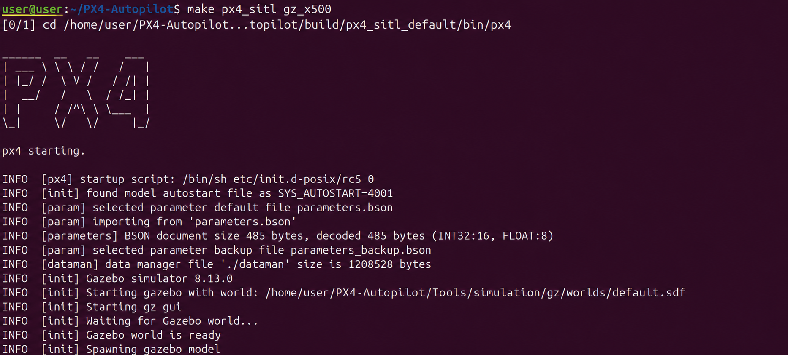
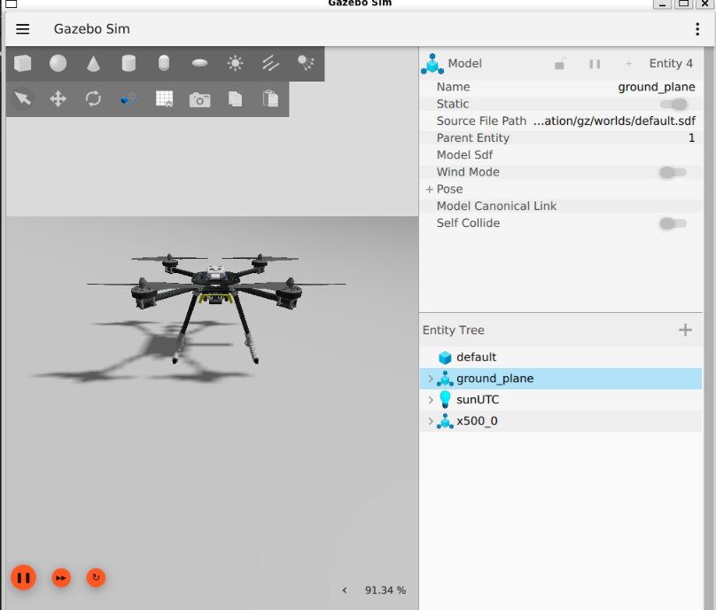
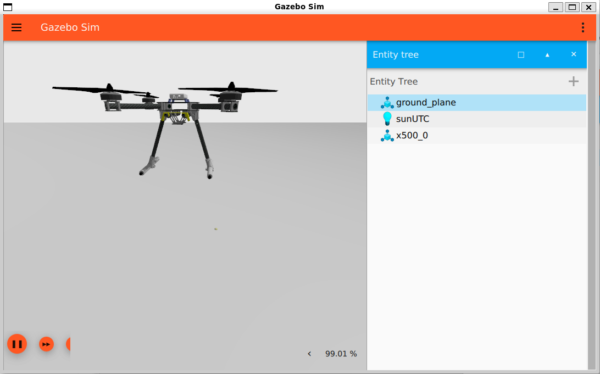

1. Introduction
Windows Subsystem for Linux (WSL) allows users to run a Linux environment directly inside Windows without installing a virtual machine or dual booting. This step-by-step guide walks you through the comprehensive setup of a fully functional autonomous drone development suite.
This guide covers:
- Installing WSL2 and Ubuntu distributions
- Managing and configuring environment versions
- Installing PX4 Autopilot & Software-In-The-Loop (SITL) dependencies
- Setting up Gazebo Harmonic simulation environments
- Installing ROS 2 Jazzy Jalisco on Ubuntu 24.04 LTS
- Deploying QGroundControl (QGC) as the Ground Control Station
2. Install WSL2
Open PowerShell as an Administrator and execute the following initialization command:
wsl --installExplanation:
- Enables the core WSL feature within Windows.
- Installs the required Linux kernel configured for WSL2 framework performance.
- Downloads and provisions a default Ubuntu distribution.
- Configures WSL2 globally as your default environment version.
Note: Restart your computer when prompted after structural installation finishes.
3. Install a Specific Ubuntu Version
To explicitly target Ubuntu 24.04 LTS (required for compatibility with ROS 2 Jazzy), run:
wsl --install -d Ubuntu-24.04Explanation:
- Downloads and deploys the independent Ubuntu 24.04 LTS container profile.
- Leverages the existing local WSL engine architecture.
- Safely bypasses reinstalling underlying WSL operational layers.
4. Verify Installation
Check your installed distributions, active states, and environment engine versioning:
wsl -l -vExplanation:
- Lists all registered Linux instances currently living in the host environment.
- Displays the real-time operational status (Running/Stopped).
- Identifies whether the distribution uses WSL1 or WSL2.
Example Output
| NAME | STATE | VERSION |
|---|---|---|
| Ubuntu | Stopped | 2 |
| Ubuntu-24.04 | Running | 2 |
5. Set WSL2 as Default
Ensure that all future distribution installations use the modern WSL2 virtualization engine:
wsl --set-default-version 2Explanation: Restricts future imports or additions from falling back to older WSL1 layers.
6. Launch Ubuntu
Open a standard PowerShell environment and initialize the subsystem:
wslExplanation: Instantly executes the shell environment inside whatever distribution is set as your default configuration.
6.1 Navigate to Home Directory
When Ubuntu boots straight via PowerShell integration, it often maps into a mounted Windows system directory pathway such as:
/mnt/c/Windows/System32CRITICAL: Before cloning code repositories, creating documents, or generating operational scripts, switch to your native Linux home partition. Working inside Windows system mounts degrades compilation performance and risks file system permission blockages!
cd ~Verify your explicit directory location:
pwdExpected Target Output:
/home/<username>Explanation: The tilde character (~) indicates the native Linux user environment
partition where PX4, ROS 2, and code packages should live.
7. Check Installed Ubuntu Versions
wsl -l -vExample Multi-Distribution Output
| NAME | STATE | VERSION |
|---|---|---|
| Ubuntu-22.04 | Stopped | 2 |
| Ubuntu-24.04 | Running | 2 |
8. Run a Specific Ubuntu Version
If you maintain multiple operational instances, launch a specific environment direct target:
wsl -d Ubuntu-24.049. Run the Default Ubuntu Version
wsl10. Set a Default Ubuntu Version
Make Ubuntu 24.04 the automatic target configuration anytime the generic wsl boot command
executes:
wsl --set-default Ubuntu-24.0411. Understanding the WSL Structure
The system architectural layer operates cleanly under the following structural framework:
└── WSL2 Engine Runtime (Virtualization Core Layer)
├── Ubuntu 22.04 Environment (Isolated Subsystem Instance)
└── Ubuntu 24.04 Environment (Active Development Subsystem Instance)
12. Key Commands Summary
| Task Target Description | Functional Operational Command |
|---|---|
| Install WSL Core Engine | wsl --install |
| Install Ubuntu 24.04 Distribution | wsl --install -d Ubuntu-24.04 |
| List Active & Extant Environments | wsl -l -v |
| Run Default Configured Environment | wsl |
| Run Explicit Distribution Targeted Instance | wsl -d Ubuntu-24.04 |
| Set Target Distribution as Environment Default | wsl --set-default Ubuntu-24.04 |
| Set Engine Globally to Version 2 | wsl --set-default-version 2 |
13. Install PX4 Autopilot
PX4 is an advanced, open-source flight control software environment built for operating autonomous drones and robotic vehicles. It features full Software-In-The-Loop (SITL) simulation support allowing verification testing in virtual environments without deployment hardware risk.
13.1 Update Ubuntu Packages
sudo apt update && sudo apt upgrade -y13.2 Install Required Development Tools
sudo apt install -y git python3-pip python3-jinja2 python3-empy python3-toml python3-numpy python3-dev python3-setuptools python3-wheel build-essentialExplanation: Deploys essential compilers, internal build tools, and mathematical Python libraries needed for source-level tool compilation.
13.3 Clone the PX4 Repository
cd ~ && git clone https://github.com/PX4/PX4-Autopilot.git --recursiveExplanation: The recursive flag pulls down the core framework source architecture along with its nested open-source submodules simultaneously.
13.4 Navigate to PX4 Directory
cd ~/PX4-Autopilot13.5 Install PX4 Dependencies
Run the automated distribution provisioning environment configurations script:
bash Tools/setup/ubuntu.shExplanation: Automatically downloads toolchains, required simulation dependencies, and supplementary development libraries.
Note: Restart your Ubuntu subsystem instance once this execution setup script terminates successfully.
14. Build PX4 SITL
cd ~/PX4-Autopilot && make px4_sitlExplanation: Compiles the core target firmware files inside an isolated functional state optimized for pure software loop testing.
15. Install Gazebo Harmonic
Gazebo Harmonic models physics calculations, vehicle sensor feedback, atmospheric wind influences, and complex collision properties.
Update local repository indexes:
sudo apt updateInstall the physics engine software suite:
sudo apt install gz-harmonic -yVerify successful software suite installation:
gz sim --versionLaunch Empty Gazebo Window
gz sim16. Run PX4 with Gazebo Simulation
Initialize the complete integrated flight environment simulation containing vehicle targets:
cd ~/PX4-Autopilot && make px4_sitl gz_x500Execution Lifecycle Steps:
- Launches operational firmware instances via PX4 SITL engine loops.
- Spawns Gazebo Harmonic visualization environment graphics interfaces.
- Models and renders the structural physics profile for an X500 quadcopter drone.
- Bridges synchronous real-time MAVLink data communication channels between tools.

Figure 5: PX4 SITL startup process after running make px4_sitl gz_x500.

Figure 6: X500 quadcopter successfully spawned in Gazebo Harmonic.

Figure 7: Gazebo simulation environment showing the X500 model and world entities.
17. Useful Gazebo Commands
Open Gazebo: Launches the core standalone simulation space interface window.
gz simList Available Gazebo Topics: Displays active sensor, dynamic actuator, and internal telemetry messaging streams.
gz topic -lDisplay Gazebo Services: Inspects and structures callable simulation parameters and world orchestrations.
gz service -lList Available Models: Identifies and enumerates all environment models and virtual actor assets spawned in world space.
gz model --listROS 2 Jazzy Installation (Ubuntu 24.04)
Target Version: ROS 2 Jazzy Jalisco (Long Term Support Release environment default for Noble Numbat).
Step 1: System Baseline Package Upgrade
sudo apt update && sudo apt upgrade -yStep 2: Set System Locale Settings
ROS 2 nodes require environment formatting support across language environments using full UTF-8.
sudo apt install locales -y && sudo locale-gen en_US en_US.UTF-8 && sudo update-locale LC_ALL=en_US.UTF-8 LANG=en_US.UTF-8 && export LANG=en_US.UTF-8Step 3: Enable Ubuntu Universe Repository Configurations
sudo apt install software-properties-common -y && sudo add-apt-repository universeStep 4: Authorize and Pull Official ROS Repository Keys
sudo apt update && sudo apt install curl -y && export ROS_APT_SOURCE_VERSION=$(curl -s https://api.github.com/repos/ros-infrastructure/ros-apt-source/releases/latest | grep -F "tag_name" | awk -F'"' '{print $4}') && curl -L -o /tmp/ros2-apt-source.deb "https://github.com/ros-infrastructure/ros-apt-source/releases/download/${ROS_APT_SOURCE_VERSION}/ros2-apt-source_${ROS_APT_SOURCE_VERSION}.$(. /etc/os-release && echo ${UBUNTU_CODENAME:-${VERSION_CODENAME}})_all.deb" && sudo dpkg -i /tmp/ros2-apt-source.debStep 5: Execute Desktop Full Installation
sudo apt update && sudo apt install ros-jazzy-desktop -yDeploys Architecture Core Targets:
- ROS 2 communications middleware data layers.
- RViz2 graphical spatial state analysis visual environments.
- Integrated package development tools, command line tools, and simulation nodes.
Step 6: Verify and Source Environment
source /opt/ros/jazzy/setup.bash && ros2 --versionStep 7: Node Communication Verification Testing
Confirm message orchestration across process borders. Open two distinct console terminal paths:
Terminal Window 1 (Talker Broadcaster Node):
source /opt/ros/jazzy/setup.bash && ros2 run demo_nodes_cpp talkerTerminal Window 2 (Listener Node):
source /opt/ros/jazzy/setup.bash && ros2 run demo_nodes_py listenerVerify that message publishing streams outputting from Window 1 successfully mirror inside Window 2.
8. Install QGroundControl (QGC)
QGroundControl serves as the host computer Ground Control Station (GCS) app layout layer communicating with active live simulated or deployment drones over structural MAVLink hooks.
Provision directories and fetch the latest QGroundControl release download URL:
curl -s https://api.github.com/repos/mavlink/qgroundcontrol/releases/latest \
| grep "browser_download_url" | grep "x86_64.AppImage"Provision directories and download the executable file container using the latest release URL:
mkdir -p ~/Downloads && wget -O ~/Downloads/QGroundControl.AppImage \
$(curl -s https://api.github.com/repos/mavlink/qgroundcontrol/releases/latest \
| grep "browser_download_url" | grep "x86_64.AppImage" \
| cut -d '"' -f 4)Elevate application execute security file permissions:
chmod +x ~/Downloads/QGroundControl.AppImageInitialize and run the user configuration software interface:
cd ~/Downloads && ./QGroundControl.AppImage --appimage-extract-and-runOperational Panels Loaded:
- Live vehicle dynamic positioning and status panel readouts.
- Spatial geographical map flight planning tracking view environments.
- MAVLink data communication telemetry streaming indicators.
⚠️ WSL Notes:
- The official CloudFront URL (
d176tv9ibo4jno.cloudfront.net) returns403 Forbiddenin terminal — always use the GitHub releases link above. - The dynamic
curlcommand above always fetches the latest version automatically — no need to manually update the version number. - The
--appimage-extract-and-runflag bypasses FUSE errors common in WSL environments. - When prompted for Firmware and Vehicle on first launch, select PX4 Pro and Multi-Rotor for simulation.
Complete Workflow Pipeline
↓
Enable WSL2 Infrastructure Engine
↓
Provision Ubuntu 24.04 Dev Instance
↓
Access Native Linux Home Directory (cd ~)
↓
Clone Source Repositories recursively
↓
Provision Environment Packages Script dependencies
↓
Build Target SITL Firmware Files
↓
Install Gazebo Harmonic Engine Layers
↓
Install Desktop ROS 2 Jazzy Suite
↓
Deploy Ground Control AppImage Components
↓
Initialize Execution Framework:
make px4_sitl gz_x500↓
Boot Operational Station GUI Panels
↓
Fully Orchestrated Simulation Active!
Takeoff and Landing Demonstration
This video demonstrates the X500 drone performing a complete takeoff and landing sequence in the PX4 SITL and Gazebo Harmonic simulation environment.
Figure 8: PX4 SITL X500 drone takeoff and landing demonstration.